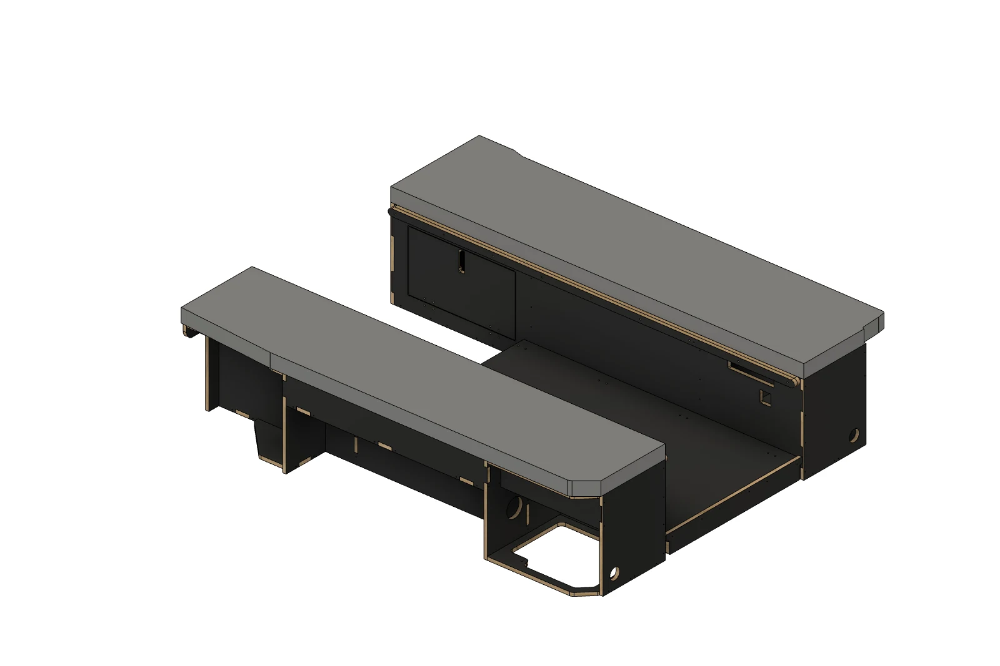
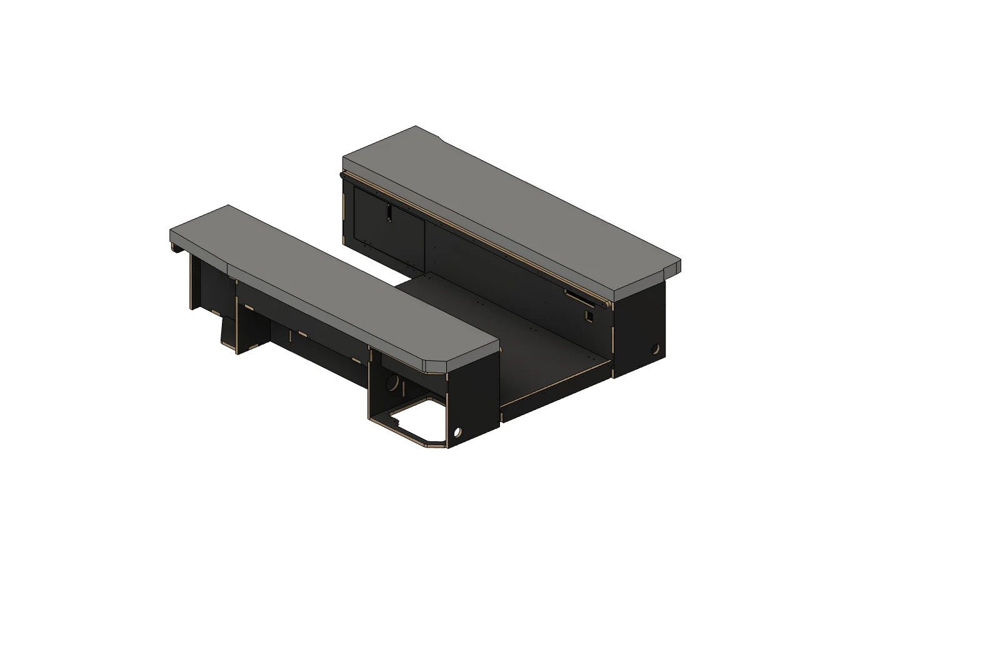
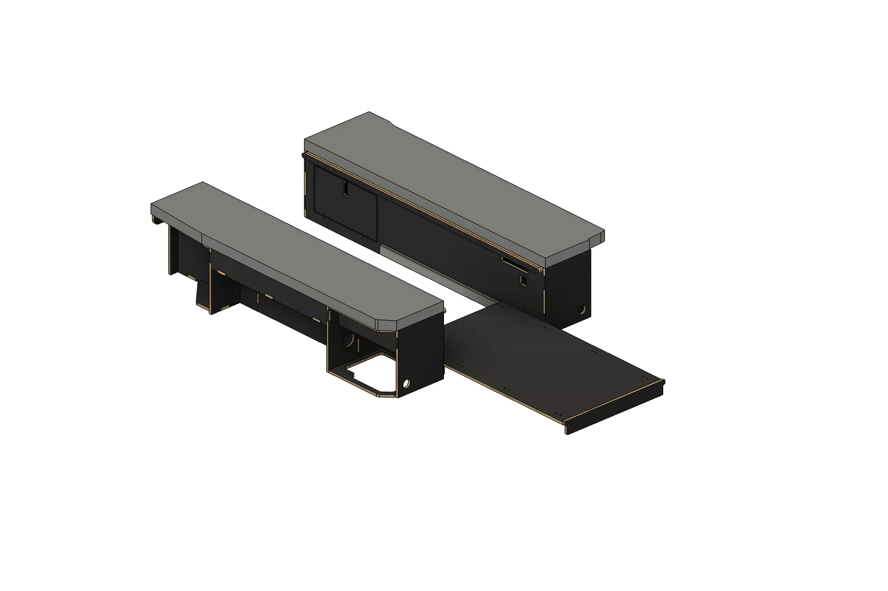

モジュール一覧 / 床スライド付きラウンジベッドMODULE 11 / 11
Lounge bed with floor slide
PLYWOOD床スライド付きラウンジベッド
通路から、後ろへ広がる使い方。
両サイドにマットレスを備えたラウンジ型ベッド。中央の5枚を並べるとフラットな寝床になり、収納すると通路が生まれます。通路には、後方へスライドアウトできる引き出しをオプションで設置できます。
Lounge bed with floor slide

ヘキサ合板01
標準装備両側＋中央5枚のマットレス
02
切り替える通路／フラットの2つの状態
03
後ろへ引き出す通路の板がスライドアウト［オプション］
OPTION / REAR SLIDE-OUT
通路の板が、後ろへ。
中央の板を引き出す、後方スライドアウト機能。二の字ベッドのオプションとして追加できます。


DETAILS
モジュールの内容
- 合板の仕上げ
- ヘキサ合板（ブラック）／バーチ合板
- 合板の小口
- どちらの仕様も木の色・木目
- マットレス
- グレー・厚さ60mm
- 中央マットレス
- 700×360mm × 5枚
- オプション
- 後方へ引き出すスライド機能